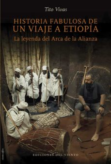

Historia fabulosa de un viaje a Etiopía: La leyenda del Arca de la Alianza
Reseña por Jorge I. Zuluaga

Ver reseña en GoodReads (necesita cuenta)
Tal vez esta sea la mejor manera de describir lo que encontrarán en "Historia fabulosa de un viaje a Etiopía".
La frase, sin embargo, podría resumir también lo que espera uno encontrar en los otros libros de viajes de Tito Vivas, historiador español, arqueólogo, egiptólogo, escritor, dibujante, empresario, friki, y así entre una amplia variedad de adjetivos académicos y epítetos informales que Tito acumula, no solo por su trabajo, sino por las aventuras que nos ha compartido en sus libros, y que son, tal parece, la punta del iceberg de su vida.
Conocí la obra de Vivas por mi pasión por la egiptología —su actual especialidad académica—. He leído sus otros dos libros de viajes por Egipto, "El viaje de un egiptólogo ingenuo" y "Tutankhamón, Howard y yo", que disfruté muchísimo y me acercaron a un Egipto que desconocía. Un Egipto que rara vez transmiten los textos académicos y divulgativos, es decir, el Egipto moderno, el de la gente de a pie, el de los millones de fieles del islam, el judaísmo y el cristianismo que habitan, por suerte o sin querer, en la tierra de los faraones de la antigüedad.
Fueron los primeros libros de viajes que leí y creo que quedé enganchado a este maravilloso género gracias a Vivas. ¡Gracias, Tito!
No me había animado todavía a adquirir y leer "Historia fabulosa de un viaje a Etiopía", en parte por mis intereses un poco monocromáticos por la historia y la geografía de Egipto, y en parte porque —y lo confieso con un poco de vergüenza, pero juraría que es un sentimiento más o menos generalizado— no me sentía muy atraído por leer la historia de un país africano (como si Egipto estuviera en Europa o en Asia).
No sé cuál es el origen de este sesgo negativo mío contra África. Se supone que soy científico —supuestamente más escéptico y objetivo que la mayoría, ¡pero es una ilusión!—, que vivo en un país del denominado "sur global" —una condición que compartimos con la mayoría de los países africanos—, un país con una enorme influencia de culturas africanas que, para bien o para mal, fueron arrastradas hasta aquí por los vientos del colonialismo europeo y la esclavitud derivada de él. Cualquiera de estas cosas debería ser razón suficiente para interesarme por conocer mejor la rica historia del diverso continente africano.
Pero no es así.
Bueno, o no lo fue hasta que leí este libro.
Debo reconocer que solo me animé finalmente a conseguir y leer "Historia fabulosa de un viaje a Etiopía", no por haber superado mis injustificados sesgos, sino gracias a dos situaciones particulares. La primera, una lectura espontánea que hizo Tito de unos párrafos de la introducción y el epílogo del libro durante una velada con amigos y conocidos en Marinilla (Antioquia), en la que tuve la suerte de estar presente. La segunda situación fue una lectura mucho más detallada que me hizo mi profesora de egiptología, Elizabeth Noreña, quien estaba fascinada por los apartes del libro en los que Vivas trata de aclarar a un creyente etíope la "verdad" histórica y arqueológica de la leyenda del Éxodo de los judíos.
Con esas dos aproximaciones quedé enganchado al contenido y al estilo del libro y decidí lanzarme a por él.
En muy pocas palabras, "Historia fabulosa de un viaje a Etiopía" narra el periplo de Vivas, en un tiempo cuando trabajaba como "creativo" en una agencia de viajes y tenía pelo —ahora él tiene su propia empresa y es calvo—, por una buena parte del país africano, buscando en el camino las historias, las personas —vivas y muertas— y los lugares que rodean la leyenda del "Arca de la Alianza". De esta reliquia judía —¿o debería decir, después de lo que aprendí en este libro, el objeto más sagrado de la primera religión de Abraham?—, que ha fascinado a exploradores, historiadores de la religión, creyentes, cineastas y en general a muchos frikis, se cuenta que desapareció del templo de Jerusalén en la antigüedad y fue transportada, según las versiones aceptadas en la actualidad, hasta los poderosos reinos del oriente de África, reinos que hoy ocupan los territorios de Eritrea y Etiopía. Junto a Tito y sus amigos —eso sonó como a publicidad de un programa infantil, pero es verdad—, hacemos un viaje en "círculo", partiendo de la capital de la moderna Etiopía, la populosa Adís Abeba, y pasando por los territorios, principalmente del norte del país, en los que se encuentran las ciudades, los pequeños villorrios, los ríos, los lagos y las islas que tienen las ruinas y, más importante, los templos clave de la historia aceptada de la presencia del Arca de la Alianza en el otrora reino de Aksum.
Lo mejor de todo el viaje y del libro es la agradable combinación que hace Tito —como cualquier buen autor de viajes sabe hacer— de anécdotas, reflexiones personales, descripciones de calidad literaria —¡mi total admiración por Tito en esta materia!— y, por supuesto, altas dosis de buena divulgación historiográfica. Con este blend es casi imposible aburrirse leyendo un libro como este.
Para quienes somos frikis de la historiografía, las páginas abundan en referencias a la historia de las religiones abrahámicas, no solo la parte que tiene que ver con el Arca de la Alianza, sino también la relación de esas tradiciones con distintos imperios de la antigüedad y la Edad Media, desde el Egipto faraónico hasta la Europa de los francos. A quienes les encanten las aventuras en países desconocidos, Tito les tiene preparadas un par de situaciones, algunas de ellas al borde de la muerte, no muy lejanas de las que vemos en las películas del arqueólogo del sombrero y el látigo (las personas admiradoras de Jones encontrarán algunas deliciosas referencias textuales y visuales "escondidas" en el libro). Si lo que quieren es leer sobre los misterios ocultos del Arca y de sus "poderes", Vivas, de forma hábil, logra darle la vuelta en más de una ocasión a las historias reconocidas de la sagrada reliquia para dejarte con más preguntas que respuestas. Si, por otro lado, tu interés es la gente de Etiopía, su situación social o política, no perderás la oportunidad de acercarte a esas personas a través de las anécdotas, unas veces muy tristes y otras muy divertidas y esperanzadoras, que lanza el autor en cada capítulo de su viaje.
En fin, este libro es un buen viaje.
Y es mi primer viaje a Etiopía.
Pero posiblemente, también sea el último.
Y no es que Tito Vivas no haya logrado transmitir en mí, a través de su libro —aunque estoy seguro de que ese no era tampoco específicamente su propósito—, un interés renovado por el país del Arca de la Alianza, del cristianismo ortodoxo fuera de Europa y de Egipto, el país de Lucy o Dinknesh —la mujer Australopithecus que dejó sus restos en el fango del oriente de África conectándonos con nuestro origen—, el país de los reinos de la antigüedad que rivalizaban con reinos vecinos mejor conocidos gracias a los sesgos históricos. Sin embargo, sus descripciones de la paupérrima situación en la que viven muchas personas en el país africano, del lamentable estado de su infraestructura —que, repito, no es muy ajeno para mí viviendo en un país como Colombia—, e incluso del descuido evidente de sus tesoros arqueológicos, que no me cabe la menor duda se han conservado en gran medida gracias a la profunda fe cristiana de muchos de sus habitantes, quienes siguen usando los mismos templos o parte de ellos para practicar sus ritos y mantener un contacto con sus divinidades, no me deja muchos ánimos de visitar Etiopía. Ni en un tour organizado por el mismo Vivas, ni de ninguna otra manera. Tal vez al decir esto siguen hablando por mí los malditos sesgos africanos. Tal vez no entendí muy bien el profundo mensaje de Tito Vivas o no me supe contagiar de su espíritu aventurero. O simplemente soy demasiado cómodo para vivir aventuras en un país como Etiopía. Creo que personalmente prefiero seguir leyendo en la comodidad de mi casa a hundirme en el fango de las riberas del Nilo Azul, a ser conducido por precipicios en destartaladas carreteras de las montañas de Etiopía o a sumergirme en los paisajes olfativos de una basílica tallada en la roca.
De una cosa sí estoy seguro: libro de viajes que publique Tito, libro que seguiré leyendo sin falta.